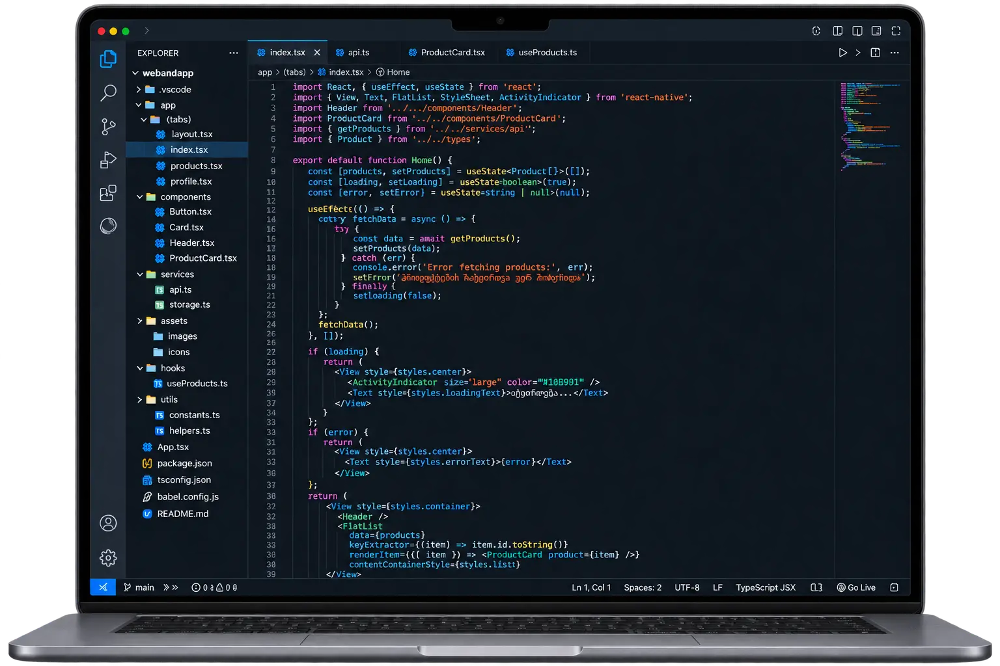

The problem it solves
Information split across spreadsheets and chats makes status tracking difficult. A shared system can define who works with which data.
Who it is for
Service teams, order-based businesses and organisations whose needs exceed ready-made tools.
What the project can include
- Customers, orders and task management
- Role-based access and change history
- Agreed integrations with existing systems
- Reports, exports and backup strategy
How we work
1. Discover
Define the goal, audience and essential functions.
2. Design
Agree on structure, visual direction and user journeys.
3. Build
Develop and test the agreed functionality.
4. Launch
Prepare publication, access and ongoing maintenance.
Choosing the technology
The final technology is selected after reviewing your requirements. These are possible directions.
What affects the timeline
Process count, data quality and integration access affect the schedule.
What affects the price
Business logic, security needs, migration and connections determine scope.
Pricing ↗Why webandapp
We document the task, agree on stages and define the deliverables before development. You can see what is included and what needs a separate decision.
Portfolio
Projects and their stories
Project case studies will be added once real materials and publication permission are available.
FAQ
Would an existing CRM be better?
We assess available products first. Custom software makes sense when important needs cannot be met practically.
How much does a website or app cost?
The price depends on features, design, integrations and content. Send a short description for an individual estimate.
How long will the project take?
We define scope and required materials first, then agree on the stages and timeline.
How do we get started?
Use the form or call us. Describe your business, goal and essential functions.
Does the project include SEO?
Technical foundations are considered during development. Ongoing content and SEO work are agreed separately.
Can the website have several languages?
Yes. Each language needs its own addresses and complete translations. The number of languages affects cost and timing.